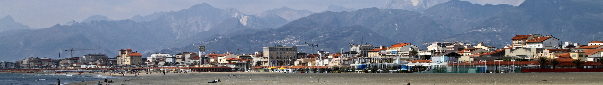

Dati pubblici per capire come cambiano popolazione, lavoro, servizi, ambiente e qualità della vita nei sette comuni del territorio.
Cosa puoi fare
Confronta i comuni su un tema oppure apri la scheda di un territorio per leggere numeri, andamento storico e confronto con la Versilia, alla Toscana e all’Italia.
7 comuni11 temi225 indicatoriCatalogo al 14 settembre 2026

Viareggio e Alpi Apuane · Foto di Carlo Pelagalli, CC BY-SA 3.0 ↗
Esplora per tema
Da dove vuoi cominciare?
La selezione aggiorna subito il confronto territoriale.
Confronto · Demografia
Popolazione residente
Residenti al 1° gennaio. La serie consente di leggere crescita o contrazione demografica.
Indicatori chiave
Totale Versilia158.520Somma dei valori dei sette comuni.
I comuni sono ordinati per valore per facilitare il confronto. L’ordine non esprime merito o qualità.
Leggere e chiedere ai dati
Dossier e Chiedi alla Versilia
I dossier raccontano casa, lavoro, turismo, anziani e scuola con grafici e confronti, anche per il tuo Comune. Con Chiedi scegli un indicatore e un confronto e ottieni la risposta con periodo, fonte e limiti.
Osservatorio Versilia nasce per riunire informazioni disperse tra portali, fogli di calcolo e pubblicazioni, rendendole leggibili e confrontabili senza perdere anno, definizione e fonte.
Grafici, confronti e approfondimenti dell’Osservatorio arrivano anche sui nostri canali social. Seguici per ritrovare i dati nel momento in cui diventano notizia o aiutano a leggere il territorio.
 Codice Istat 046005
Codice Istat 046005 Codice Istat 046013
Codice Istat 046013 Codice Istat 046018
Codice Istat 046018 Codice Istat 046024
Codice Istat 046024 Codice Istat 046028
Codice Istat 046028 Codice Istat 046030
Codice Istat 046030 Codice Istat 046033
Codice Istat 046033